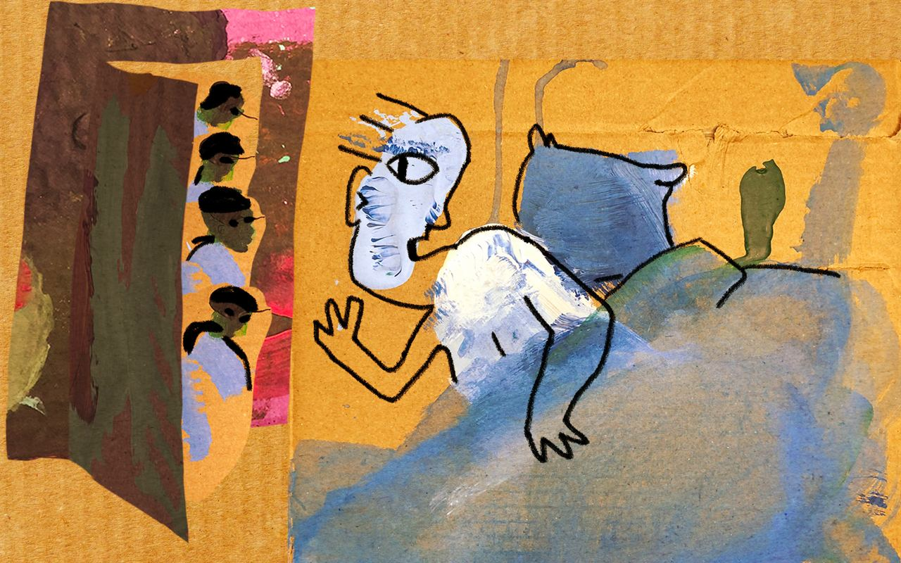
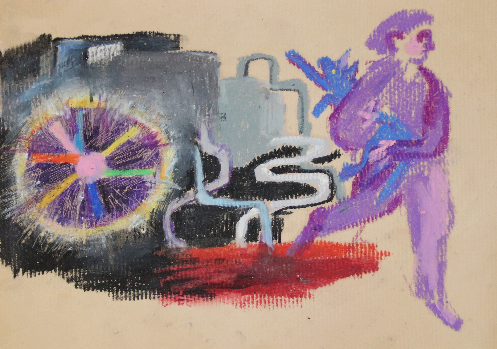

Projects
Russians’ dreams during the war in Ukraine. Science of Dream: 2022 - ongoing
Details
Description
At the end of February 2022, my colleagues and I launched a project to collect the dreams of Russians during the war. We have developed a methodology, prepared a questionnaire, collected and analyzed more than 1000 dreams sociologically. The results of the study have been published in outlets such as The February Journal, Republic, Posle Media. You can submit your dream at the link.
Links
What kind of material we work with

Figure 1. Visualization of the dream, 2022. © Sonya Nikitina, all rights reserved, used with permission.
‘I dreamed that I was in my old apartment. The front door is closed but unlocked. I close it with a latch, and suddenly, through the crack, I notice that there is someone behind it. At first, I think it’s my mother,and she is about to come inside. But time passes, and the person just stands silently outside the door. I still can’t see who it is, and then the door becomes almost transparent, and I realize that four guys are standing behind it. Standing silently, looking right at me. I hold the latch with my hand just in case. At first, I shout for them to go away, but I’m too scared and my voice is trembling. They don’t move. Then I start asking what they want, and the guys suddenly spring to life: still silent, they come up close and stare right at me’ (03/06/2022, F, age 20).

Figure 2. Visualization of the dream, 2022. © Agata Gilman, all rights reserved, used with permission.
‘A mysterious celestial object falls to Earth near Moscow’s water reservoirs; scientists announce that it can poison the water. The Russian authorities decide not to shoot down the object and allow the contamination. The news announces that the citizens must take care of themselves exclusively, and the property of the dead will be handed over to the military and security forces as salaries, as there is no money in the budget for their maintenance. In a panic I grab my cat, warm clothes and run to the forest park, because I am afraid that looting and violence will start immediately, and I hope that the snow will not melt for some time and that my cat and I will have potable water’ (07/04/2022, F, age 29)

Figure 3. Visualization of the dream, 2022. © Sonya Nikitina, all rights reserved, used with permission.
‘I came with a group of rescuers to the Mausoleum on Red Square. We received a signal that the mausoleum had been taken over many years ago by two crazy old women who had taken up residence there. They have taken a male tour guide hostage and are giving birth to ugly children. They heal the children half to death because the old women have Munchausen’s syndrome. Oh, what a Kunstkammer we found there… We walked the endless corridors of the dungeon, found scary-looking kids and took them outside. But most of them were not viable…’ (22/04/2022, F, age 48)
Panel-survey of War-induced Russian Emigrants. OutRush Project: 2022 - ongoing
Details
Description
A research project on Russian emigration. We conduct surveys of Russians who left the country after February 24, 2022. More than 5,000 people in more than 60 countries already participate in the survey.
Links
A qualitative study of Feminist Anti-war Resistance activists: May 2022 - ongoing
Description
The main aim of the project is to understand how Feminist Anti-War Resistance (FAS) activists cope with the experience of living abroad, how their activism has changed in emigration, their motivation to continue their activism, and the difficulties they face in their host societies. The project is a collaboration with Indiana University and the University of Oslo.
If you would like to participate in the interview, write to Telegram: @Karolina_Nugumanova1
Building a Commons in the Russian Diaspora: 2022 - ongoing
Description
Research is designed to understand the structure of the Russian migrant community and how people are dealing with migration experiences and building new organizations, ties, and social support. We have already collected more than 400 interviews with emigrants in Serbia, Kazakhstan, Armenia, Georgia, Kyrgyzstan and Turkey.
If you would like to participate in the interview, write to Telegram: @Karolina_Nugumanova1